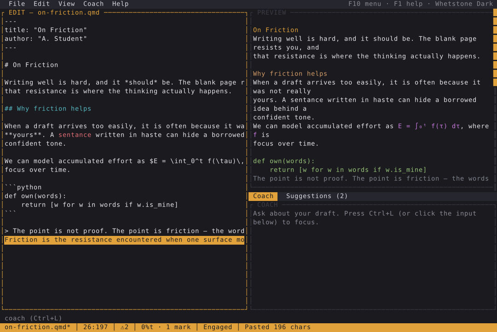
Paste quarantine
Anything you paste is held apart and marked. To release it, rewrite it in your own words or tag it as a quotation. Borrowed text cannot quietly become your draft.
Finally, an AI coach and Markdown editor the 90s deserves. A terminal writing surface that keeps the words yours.
Pastes are quarantined until you rewrite or attribute them. The optional coach can only ask questions, never write your sentences. When you are done, export an honest record of how the piece came together. It adds friction, not proof: it never claims to verify who wrote anything.
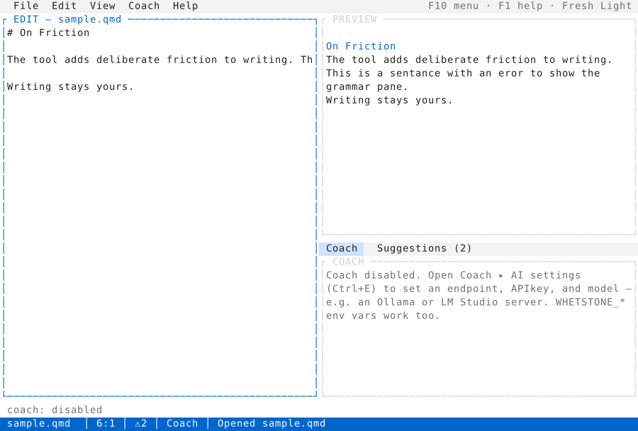
Friction, not proof
Each instrument responds to a friction dial from Quiet to Deep Work, so you choose how much resistance the draft puts up.

Anything you paste is held apart and marked. To release it, rewrite it in your own words or tag it as a quotation. Borrowed text cannot quietly become your draft.
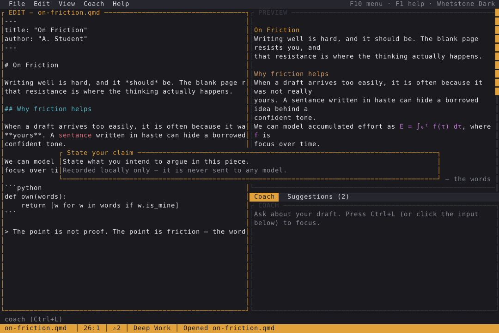
Ownership is measured as how much of the original paste survives your rewriting, not the reverse. State your claim, and it travels with the draft into the disclosure.
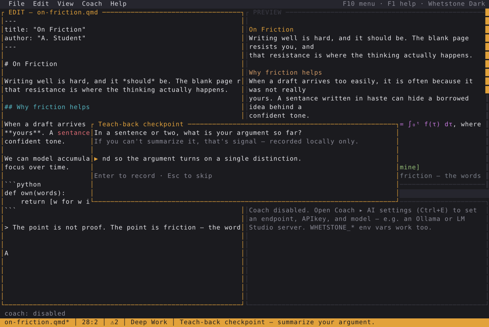
At a cadence you set, Whetstone pauses and asks you to summarize the argument so far in your own words before you keep writing.
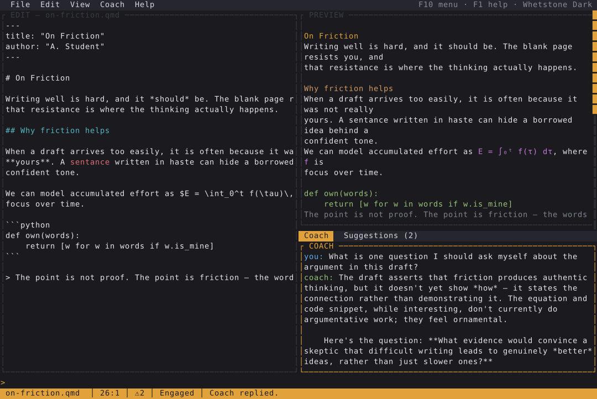
The optional coach reads your draft and replies with questions. A deterministic guard screens every reply, so it can sharpen your thinking but never hand you sentences.
The writing surface
No modes to memorize and nothing to learn from a manual. It is mouse and keyboard driven in the Fresh and Micro tradition: menus, theming, click to place the cursor, drag to select.
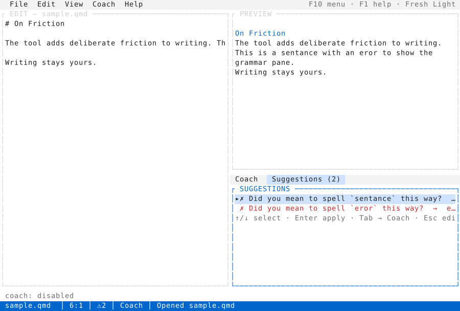
The coach
The coach is optional and off until you point it at an endpoint. When it is on, it is question-only by construction, not by polite request.
| Protocols | OpenAI-compatible Chat Completions, Anthropic Messages |
|---|---|
| Screening | Deterministic guard (always), optional LLM judge (defence in depth) |
| History | Per document, owner-only on disk. The draft itself is never stored here. |
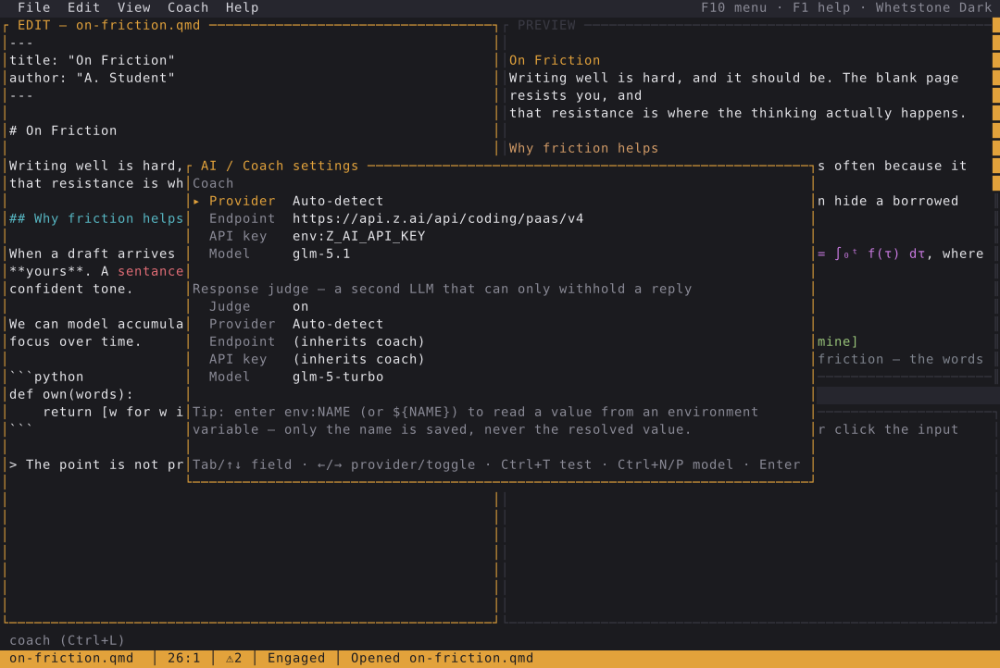
# is this reply allowed against the draft? prints a JSON verdict whetstone-tui guard --reply "Have you considered the counterargument in section 2?" \ --draft essay.qmd # one guarded (and optionally judged) coaching turn, headless whetstone-tui coach essay.qmd --message "Where is my argument weakest?"
An honest record
An append-only journal records the shape of your process: paste sizes, claims, attributions, and edit bursts. It holds metadata only. Your prose is never written to it. From that journal you can render a plain disclosure document, a self-reported account, not a verdict on who you are.
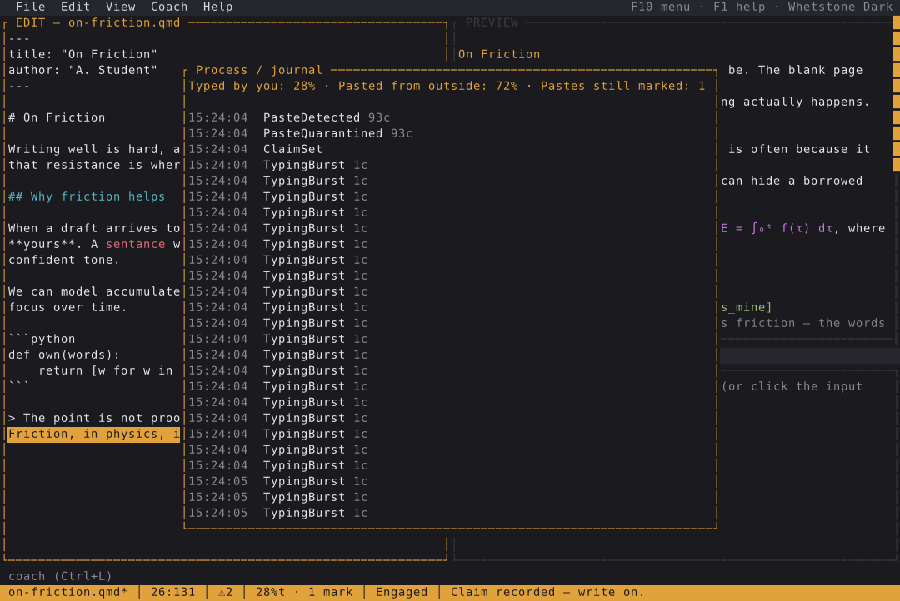
A timeline of what happened, kept to sizes, locations, and your own stated claim. Metadata only, by design.
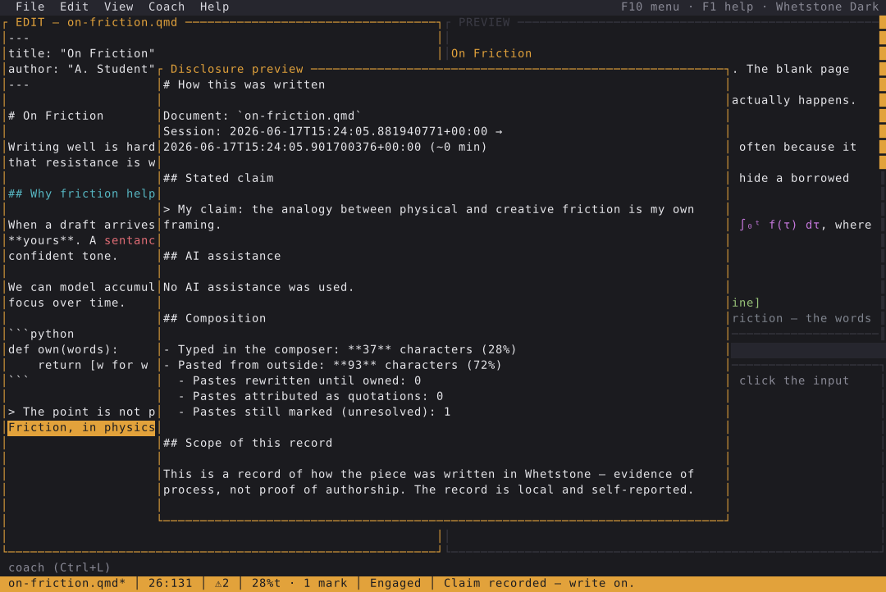
A readable account you can hand in alongside the work. It says how the draft came together. It never claims to verify authorship or personhood.
Themes
Press Ctrl+T to preview and switch. The choice persists between sessions.
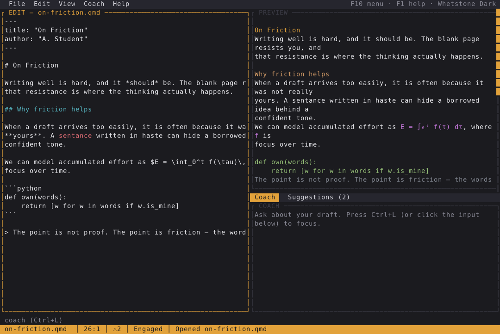
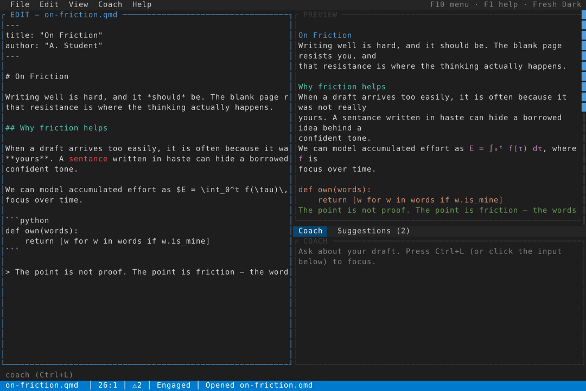
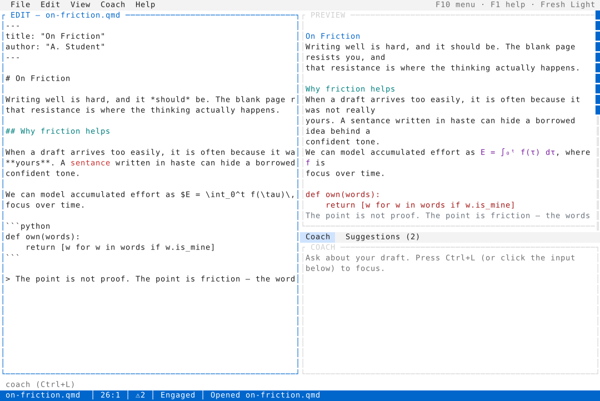
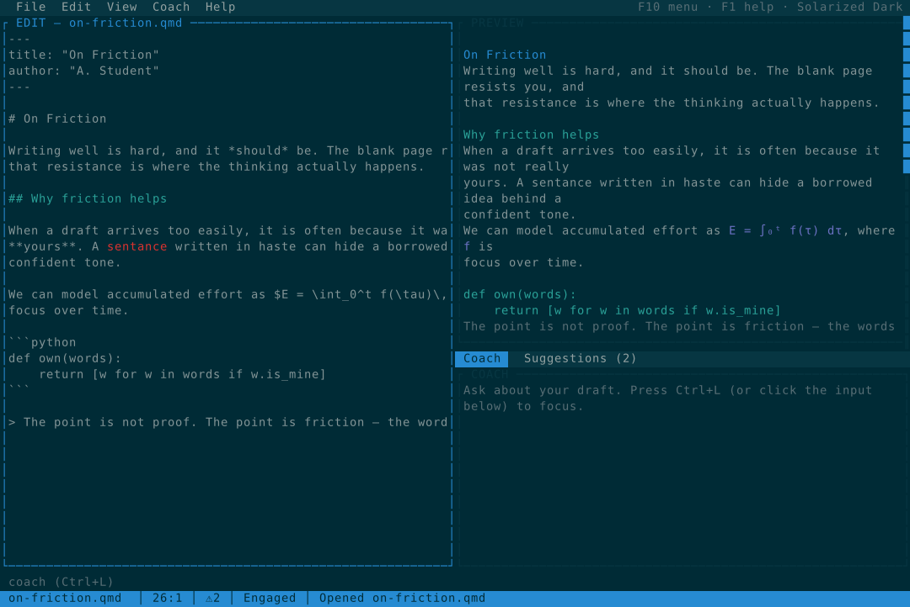
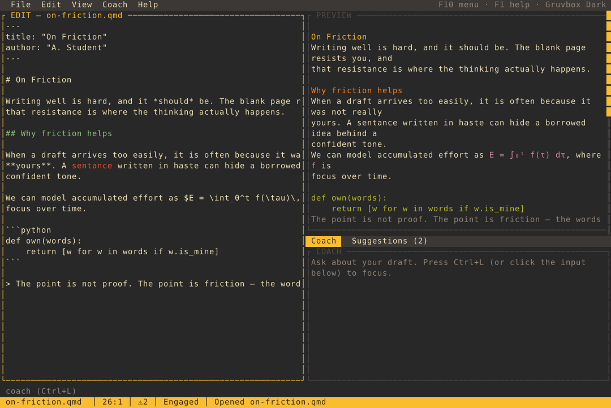
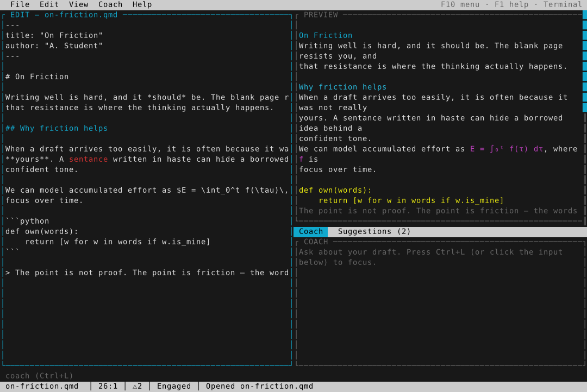
Scriptable
Every guarantee in the editor is also a subcommand that prints JSON, so an agent, a script, or a CI step can run the same checks. A bare file path opens the editor.
whetstone-tui lint essay.qmd # Harper diagnostics + fixes whetstone-tui coach essay.qmd --message "…" # one guarded coaching turn whetstone-tui guard --reply "…" --draft essay.qmd # screen an arbitrary reply whetstone-tui ownership --original a.txt --current b.txt # claim-to-own survival whetstone-tui disclosure --journal events.json --doc-id essay.qmd
Whetstone is a single Rust binary. It needs a recent toolchain (edition 2024). Quarto is optional and only used when you render with Ctrl+R.
git clone https://github.com/sjvrensburg/whetstone.git cd whetstone cargo run -- draft.qmd # opens, creates if missing cargo build --release # ./target/release/whetstone-tui